▲ 입곡군립공원 저수지 물가의 데크길. 촬영 연도는 자료에 없다. ⓒ 한국관광공사 · 공공누리 제3유형(변경금지)
"입곡저수지 둘레길은 한 바퀴에 몇 km이고, 주차는 어디에 하며, 11월 초에도 단풍이 남아 있을까?" 2026년 10월 22일 기준으로 함안군 문화관광포털과 한국관광공사 자료에서 확인되는 것만 모았다. 입곡군립공원에서 검암산 쪽으로 이어지는 아라힐링 트레킹길은 코스별 거리가 공식 안내돼 있지만 소요시간은 안내돼 있지 않고, 악양둑방은 거리 안내가 자료마다 2.7km와 6.5km로 엇갈린다. 함안군 입곡군립공원 안내 바로가기
이 글은 입곡군립공원과 악양루·악양둑방을 중심으로, 같은 군 안의 무진정과 말이산 고분군까지 반나절 안에 묶을 수 있는지 직선거리로 따져 본다. 올해 단풍 절정일은 함안만의 공식 예측이 없어 확인하지 못했다고 먼저 밝혀 둔다.
💡 먼저 결론
입곡군립공원은 입장료 무료, 한국관광공사 정보상 상시 개방·연중무휴(기상에 따라 통제될 수 있음)이고 주차장은 함안군 안내로 2개소 158면이다. 인공폭포는 11월부터 가동이 중단돼 11월 초에는 볼 수 없다. 악양루는 전용 주차장이 없어 인근 식당 주차장(20여 대)을 쓰는 것으로 안내돼 있다.
1. 입곡·악양·무진정·말이산, 공식 자료로 확인한 기본 정보
함안군 안내로 입장료가 명시된 곳은 입곡군립공원(무료)과 악양생태공원(무료)이고, 악양둑방은 이용요금 없음으로 안내된다. 무진정·말이산은 요금 항목이 비어 있어 확인하지 못했다.
| 장소 | 개방·요금 | 주차 | 문의 |
|---|---|---|---|
| 입곡군립공원 (산인면 입곡공원길) | 상시 개방, 연중무휴(기상에 따라 통제 가능, 한국관광공사). 입장료 무료, 무빙보트·아라힐링사이클은 유료(함안군) | 주차장 2개소 158면(함안군). 한국관광공사 주차정보는 "가능" | 군립공원담당 055-580-3531 |
| 악양루 (대산면 대법로 331-1) | 상시 개방, 연중무휴(한국관광공사). 이용요금 항목 없음 | 악양루가든(식당) 주차장 이용, 20여 대(함안군) | 055-580-2551 |
| 악양둑방 (법수면 악양길 49-10) | 상시 개방, 연중무휴, 이용요금 없음(함안군). 주차 무료(한국관광공사) | 풍차주차장이 주변 시설로 소개됨. 면수는 확인하지 못함 | 농업기술센터 055-580-4521 |
| 무진정 (함안면 괴산4길 25) | 상시 개방, 연중무휴(한국관광공사). 요금 항목 없음 | 주차 "가능"(한국관광공사). 면수는 확인하지 못함 | 055-580-2551 |
| 말이산 고분군 (가야읍 도항리 일대, 고분전시관 삼기길 91) | 상시 개방, 연중무휴(한국관광공사). 이용요금 항목 없음(함안군). 함안박물관은 09:00~18:00·무료·월요일 휴관(함안박물관) | 함안박물관 주차장·군청 주차장 이용(함안군). 박물관·전시관 주차 무료(한국관광공사) | 말이산담당 055-580-2561, 박물관 055-580-3901 |
같은 입곡군립공원인데도 주차 수치가 달라 보이는 이유는 자료 기준이 다르기 때문으로 보인다. 함안군 상세 페이지의 시설 현황은 주차장 2개소 158면이고, 같은 페이지의 주차정보 칸에는 180이라는 숫자만 적혀 있어 단위·기준을 확인하지 못했다. 이 글은 설명이 붙은 158면만 인용한다. 대한민국 구석구석 바로가기
함안군 입곡군립공원 안내의 시설 현황은 면적 960,695㎡, 산림욕장 45ha, 화장실 4개소다. 같은 페이지는 공원 입구의 저수지와 112m 출렁다리를 건너는 산책로 일주를 소개하지만 한 바퀴의 거리·시간은 적지 않았다. 아라힐링카페 요금에는 함안군민 40%, 장애인·국가유공자·수급자·65세 이상·다자녀가정 등 20% 할인이 있고, 같은 날 다른 체험시설을 이어 쓰면 20%가 추가로 깎인다.
2. 입곡 둘레길 코스별 거리 — 3.15km부터 4.9km까지
함안군 검암산 안내 페이지는 입곡군립공원 주차장 또는 중검마을에서 시작하는 아라힐링 트레킹길 6개 코스의 거리를 올려 두었다. 소요시간은 이 코스들에 적혀 있지 않고, 저수지 한 바퀴(일주) 거리도 공식 수치를 찾지 못했다. 함안군 검암산·아라힐링 트레킹길 안내 바로가기
| 출발점 | 코스 | 경유지 | 거리 |
|---|---|---|---|
| 입곡군립공원 주차장 | 1코스 | 입곡군립공원 단풍길 → 출렁다리 → 한반도지형전망대 → 검암산 | 3.15km |
| 입곡군립공원 주차장 | 2코스 | 입곡문화공원 → 동지산마을(돌담길) → 검암산 | 3.5km |
| 입곡군립공원 주차장 | 3코스 | 입곡문화공원 → 동지산마을 → 상검·중검마을 중간 → 검암산 | 4.9km(함안군 안내) |
| 중검마을 | 1코스 | 검암산 → 한반도지형전망대 → 출렁다리 → 단풍길 → 공원 주차장 | 4.25km |
| 중검마을 | 2코스 | 동지산마을 → 입곡문화공원 → 공원 주차장 | 3.9km |
| 중검마을 | 3코스 | 상검마을 → 동지산마을 → 입곡문화공원 → 공원 주차장 | 4.7km |
3코스 거리는 자료마다 다르다. 함안군 페이지는 4.9km, 이 길을 소개한 한 여행 매체는 4.5km로 적었다. 같은 길이라도 시작점과 어느 구간까지 세는지가 다르면 수치가 갈리므로, 현장 안내판의 수치를 기준으로 삼는 편이 안전하다.
시간을 가늠할 근거로는 같은 페이지의 검암산 등산로 안내가 있다. 하검길 3.2km는 1시간 25분, 상검길 3.3km는 1시간 30분으로 적혀 있다. 다만 이는 입곡이 아닌 검암산 오르는 길의 소요시간이므로, 아라힐링 트레킹길 시간으로 그대로 옮기지는 않는다.
출렁다리 길이도 자료마다 다르다
함안군 입곡군립공원 안내는 출렁다리를 길이 112m, 폭 1.5m로 적었다. 반면 2025년 10월 한 여행 매체는 길이 96m로 소개하며 2021년 8월 재개장했다고 썼다. 어느 쪽이 맞는지 공식 자료로 확정하지 못해, 이 글은 함안군 안내값 112m를 쓰고 차이를 함께 밝힌다.
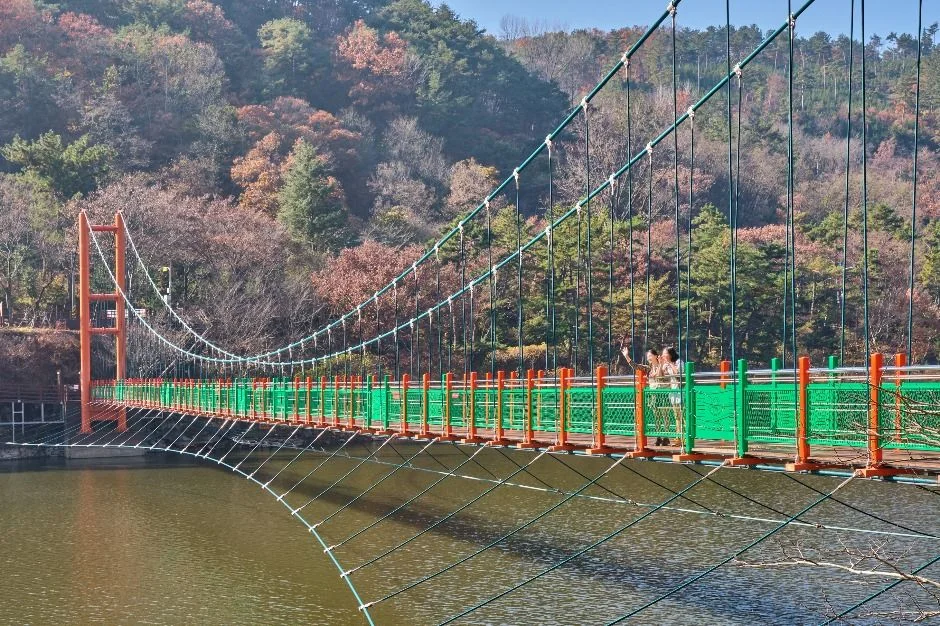
▲ 저수지를 가로지르는 출렁다리. 산 사면의 나뭇잎 색이 달라진 모습이 보이며 촬영 연도는 자료에 없다. ⓒ 한국관광공사 · 공공누리 제3유형(변경금지)
입곡문화공원은 입곡군립공원 안쪽 골짜기에 있는 6만 250㎡ 규모의 정원으로, 함안군은 연못·산책로·유리온실·미로원 등을 갖췄다고 소개한다. 2·3코스가 이 공원을 지나므로 코스를 고르면 자연스럽게 들르게 된다.
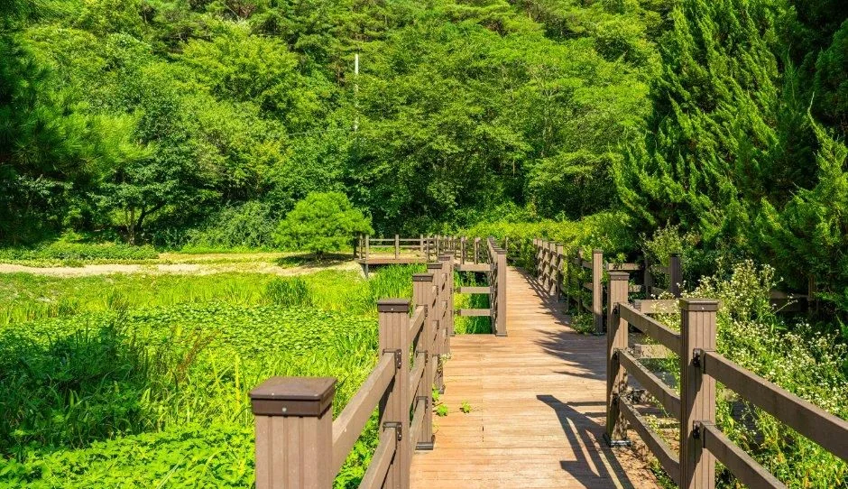
▲ 입곡문화공원의 데크 산책로. 초록이 짙은 계절의 사진이다. 사진=한국관광공사
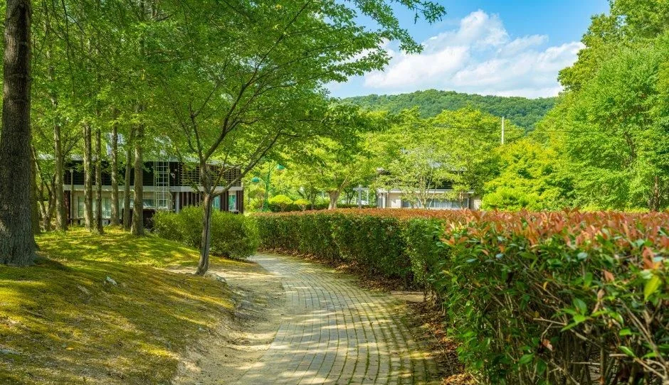
▲ 입곡문화공원의 벽돌 산책로. 초록 계절의 사진이다. 사진=한국관광공사
3. 11월 초 단풍과 인공폭포 — 확인한 것과 못 한 것
11월 초의 입곡에서 확실히 말할 수 있는 것은 인공폭포가 멈춘다는 점이다. 함안군 안내에 따르면 폭포는 4~10월 토·일·공휴일 11·13·14·15·16시(회당 10분 안팎)에 가동되고, 우천 시에는 쉬며, 11월부터 이듬해 3월까지는 가동 중단이다.
| 항목 | 내용 |
|---|---|
| 제1폭포 | 폭 12~26m × 높이 35m(2단) |
| 제2폭포 | 폭 15m × 높이 10m(1단) |
| 폭포 가동 | 4~10월 토·일·공휴일 11시·13시·14시·15시·16시(5회), 우천 시 중단, 11월~3월 가동 중단 |
| 아라힐링카페(무빙보트·사이클) | 10:00~18:00(12:00~13:00 휴식), 월요일 휴무(공휴일이면 운영), 우천·강풍 시 중단 |
| 요금 | 무빙보트 30분(4인) 20,000원, 아라힐링사이클 4층 15,000원·바이크 3층 1인 15,000원 |
| 문의 | 공원관리사업소 055-580-3423, 아라힐링카페 055-580-4596 |
폭포와 달리 보트·사이클은 11월 중단 문구가 없지만, 이용 요금·운영 기간은 바뀔 수 있어 11월 운영 여부는 출발 전 전화로 확인하자.
단풍 시기는 함안 단독 예측을 공식 자료로 찾지 못했다. 한국관광공사가 10월 8일 공개한 '2026 단풍지도'는 경상권·전라권 절정을 11월 초중순으로 안내했고, 한 보도에 따르면 진주 경남수목원의 단풍나무 절정 예상일은 11월 8일이다. 산림청 예측지도(예측지도 이미지 기준)에서 지리산은 10월 27일로 제시됐다. 모두 권역·수목원·명산 단위 수치라 입곡·악양에 그대로 옮길 수 없다.
전국 흐름은 산림청 2026 단풍 절정 예측 기사에서 볼 수 있다. 입곡군립공원에 단풍길이 있다는 사실만 확인될 뿐 절정 시기는 알 수 없다.
4. 악양루·악양둑방 — 2.7km냐 6.5km냐
악양둑방의 거리는 한국관광공사 정보와 함안군 안내가 서로 다르다. 한국관광공사 개요는 꽃이 피어 있는 구간이 2.7km이고 왕복 넉넉히 2시간 안팎이라고 적었고, 함안군 안내는 악양둑방길 왕복 6.5km로 적었다. 함안군 악양둑방 안내 바로가기
| 출처 | 수치 | 범위 |
|---|---|---|
| 한국관광공사 TourAPI 개요 | 2.7km, 왕복 2시간 안팎 | 꽃이 피어 있는 구간 |
| 함안군 문화관광포털 | 왕복 6.5km | 악양 둑방 길(구간 기준 설명 없음) |
두 수치가 다른 이유는 "꽃 구간만 센 길이"와 "둑방길 전체 왕복"으로 기준이 다르기 때문일 가능성이 있지만, 자료에는 이유가 적혀 있지 않아 추정에 그친다. 걷는 시간을 잡을 때는 긴 쪽(6.5km)을 기준으로 여유를 두는 편이 안전하다. 자전거 대여는 시간당 5,000원으로 안내돼 있다.
계절 꽃은 함안군 안내에 봄꽃(양귀비·수레국화·튤립 등)과 가을꽃(코스모스·국화 등)이 구분돼 있다. 올해 11월 초에 가을꽃이 남아 있을지는 공식 자료로 확인하지 못했다. 악양생태공원에는 핑크뮬리 식재지(4,611㎡)가 있고 함안군은 10월에 만개한다고 소개하는데, 11월 초 상태 역시 확인하지 못했다.
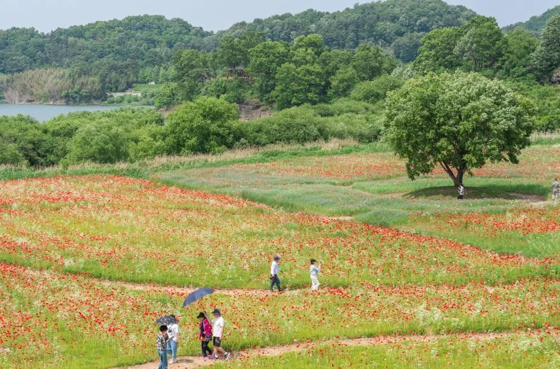
▲ 붉은 꽃이 핀 악양둑방 일대. 함안군이 봄 양귀비를 소개하는 곳이지만 이 사진의 촬영 시기는 자료에 없다. 사진=한국관광공사
악양루는 악양마을 북쪽 절벽 위의 정자다. 함안군 안내로는 1857년(철종 8년)에 세웠다고 전해지고, 한국전쟁 이후 복원해 1963년에 고쳐 지었으며, 1992년 10월 21일 문화재자료 제190호로 지정됐다. 정자 아래로 남강이 흐르고 앞으로 들판과 법수면 제방이 보인다고 소개한다. 함안군 악양루 안내 바로가기
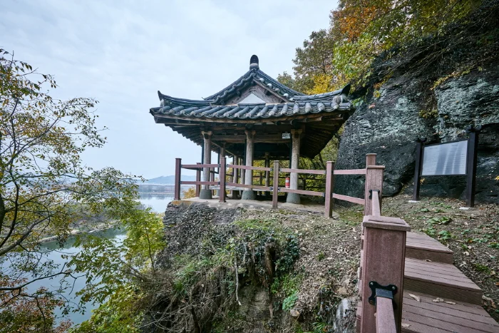
▲ 절벽 위 악양루. 한국문화관광연구원 사진으로 한국관광공사에 올라 있으며 촬영 시기는 자료에 없다. ⓒ 한국관광공사 · 공공누리 제3유형(변경금지)
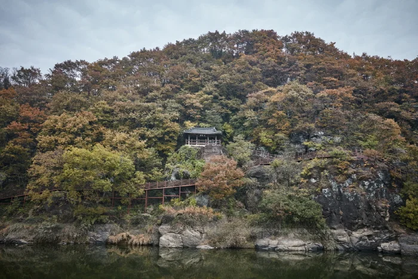
▲ 강 건너에서 본 악양루 일대. 숲의 색이 갈색·주황빛으로 보이지만 촬영 시기는 자료에 없다. ⓒ 한국관광공사 · 공공누리 제3유형(변경금지)
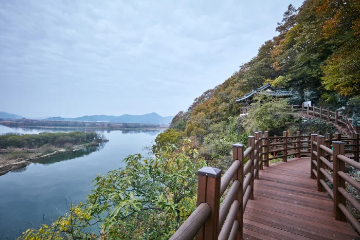
▲ 악양루로 이어지는 데크길과 남강. 촬영 시기는 자료에 없다. ⓒ 한국관광공사 · 공공누리 제3유형(변경금지)
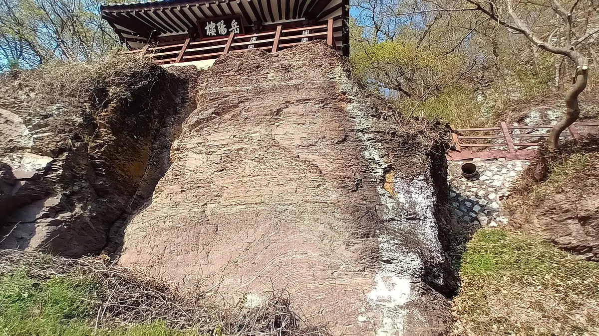
▲ 절벽 아래에서 올려다본 악양루. 가지에 새잎이 돋는 모습으로 작성자가 2023-04-02에 촬영해 올린 봄 사진이며, 암벽 지형을 보여 주는 용도로 실었다. 사진=Dittwjfsdgkvkdjg · Wikimedia Commons · CC BY-SA 3.0
악양루에서 악양둑방까지는 좌표 기준 직선 약 1.1km다. 함안군은 처녀뱃사공 노래비와 악양루, 둑방을 함께 둘러보면 좋다고 소개한다. 악양루 주차는 식당 주차장을 이용하는 구조라 단풍철 주말에는 자리가 빠듯할 수 있고, 갓길 주차는 단풍철 갓길 주차 단속 기사를 참고해 피하는 것이 좋다.
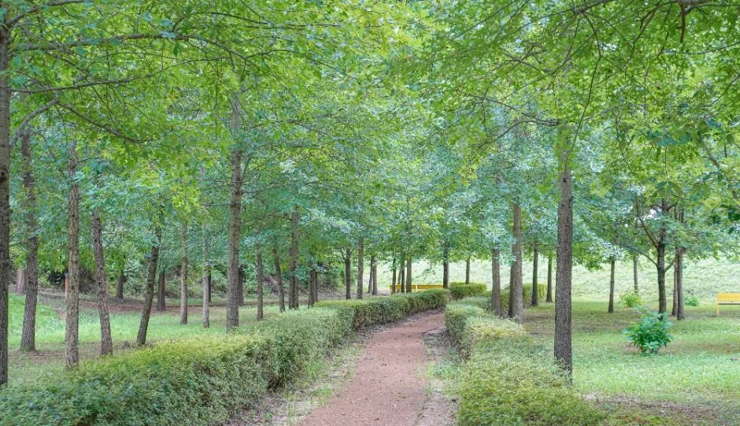
▲ 악양생태공원의 가로수 산책로. 초록이 짙은 계절의 사진이다. 사진=한국관광공사
5. 반나절에 몇 곳? 직선거리로 본 입곡~무진정~말이산~악양 코스
함안군은 봄·가을 추천 코스로 "함안박물관 → 말이산고분군 → 무진정 → 입곡군립공원"(1코스)과 "함안박물관 → 말이산고분군 → 악양둑방 → 악양루"(2코스)를 올려 두었다. 두 코스를 한 번에 잇는 안내는 없고, 지점 사이 도로 거리·소요시간도 확인하지 못했다. 함안군 추천여행코스 바로가기
| 구간 | 직선거리 |
|---|---|
| 입곡군립공원 → 무진정 | 약 2.8km |
| 무진정 → 말이산 고분군 | 약 2.3km |
| 입곡군립공원 → 말이산 고분군 | 약 4.2km |
| 말이산 고분군 → 악양루 | 약 7.3km |
| 말이산 고분군 → 악양둑방 | 약 7.0km |
| 악양루 → 악양둑방 | 약 1.1km |
함안군 추천코스에는 위 두 코스 말고도 "입곡군립공원 → 함안박물관 → 말이산고분군 → 함안승마공원"(3코스)과 입곡·박물관·승마공원·악양둑방·애국지사 산돌 손양원기념관을 묶은 1박 2일 코스가 있다. 입곡과 악양을 모두 넣은 코스는 1박 2일 코스뿐이다.
입곡·무진정·말이산은 서로 5km 안쪽에 모여 있고, 악양 쪽은 말이산에서 7km 넘게 떨어져 있어 한 덩어리로 묶기 어렵다. 그래서 반나절이라면 입곡(트레킹길 1코스 3.15km 구간 중심)과 무진정·말이산을 묶고, 악양루·둑방은 따로 한 번 더 가는 편이 현실적이다.
무진정은 연못 위 정자다. 함안군 안내는 조삼 선생이 직접 지었다고 하고, 한국관광공사 개요는 1567년에 후손들이 세웠다고 적어 건립 주체가 다르게 서술돼 있다. 1976년 12월 20일 유형문화재 제158호로 지정됐다는 점은 함안군 안내로 확인된다. 함안군 무진정 안내 바로가기
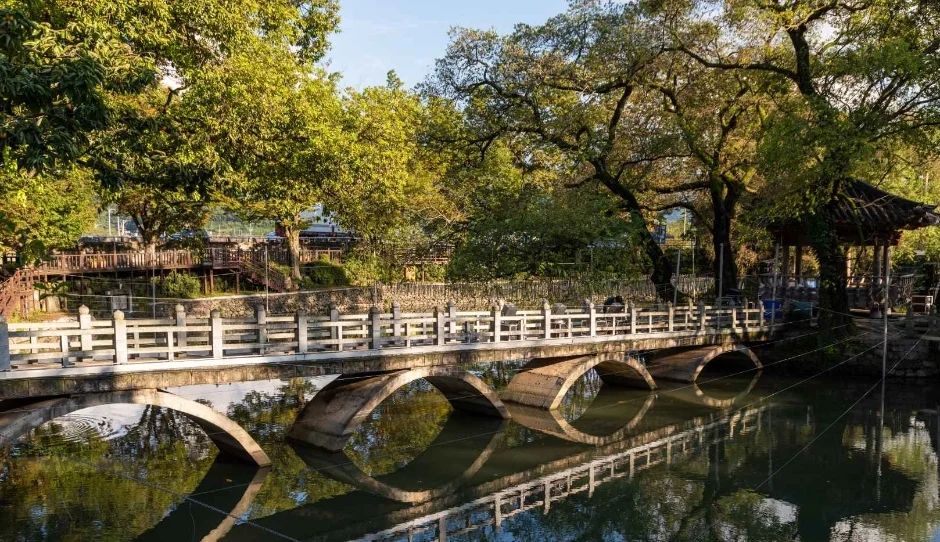
▲ 무진정 일대 연못과 다리. 나뭇잎이 연둣빛·황록색으로 보이나 촬영 시기는 자료에 없다. 사진=한국관광공사
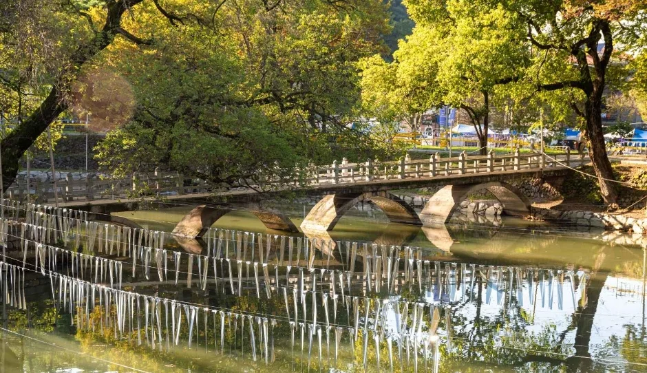
▲ 연못에 비친 다리와 나무. 촬영 시기는 자료에 없다. 사진=한국관광공사
말이산 고분군은 2011년 7월 28일 도항리고분군(사적 제84호)과 말산리고분군(사적 제85호)을 합쳐 사적 제515호로 재지정됐다. 함안군 안내는 면적을 525,221㎡로 적었지만 국가유산포털의 현행 수량/면적은 797,282.5㎡로 달라, 이 글은 두 수치를 함께 밝힌다(통합 후 지정 범위가 바뀌었을 가능성이 있으나 자료에 이유는 없다).
함안군이 번호를 붙여 관리하는 봉토분은 37기이고, 1991년 정밀 지표조사에서 113기가 확인됐으며 삭평된 것까지 합치면 1,000기 이상으로 추정된다고 한다. 출토 유물은 토기 2,010점 등 총 7,961점이다. 말이산은 2023년 9월 「가야고분군」 7곳 중 하나로 유네스코 세계유산에 등재됐다. 같은 가야 고분 소재는 고령 대가야 박물관·지산동 고분군 기사와 비교해 볼 만하다.
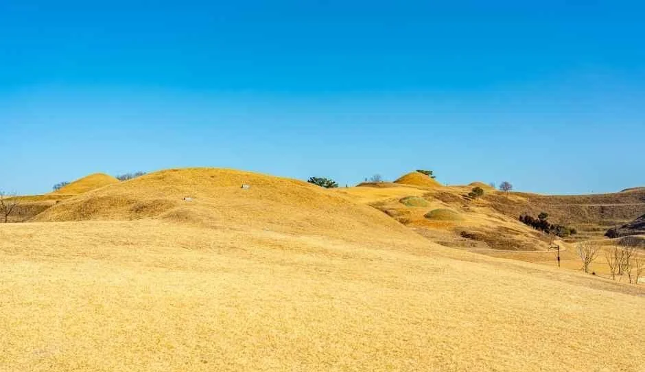
▲ 말이산 고분군 능선. 잔디가 누렇게 마른 모습이 보이며 촬영 시기는 자료에 없다. 사진=한국관광공사
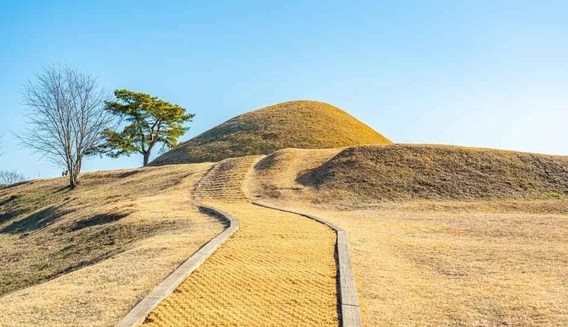
▲ 말이산 고분 사이의 탐방로. 촬영 시기는 자료에 없다. 사진=한국관광공사
▲ 함안박물관 정면. 함안군 안내는 말이산 탐방 전에 박물관을 들르면 좋다고 소개한다. 사진=한국관광공사
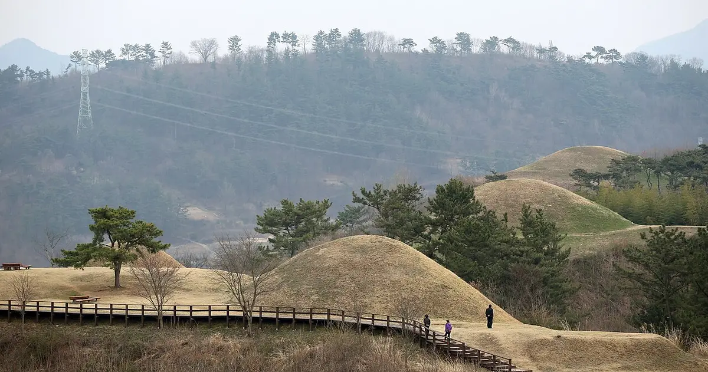
▲ 말이산 고분군의 목재 탐방로. 잔디가 갈색으로 마르고 나무가 앙상한 모습이다. 위키미디어 커먼즈 메타데이터상 촬영일은 2015-03-27로, 늦가을이 아닌 이른 봄 풍경이라 11월 모습의 참고용이다. 사진=Republic of Korea(Flickr) · Wikimedia Commons · CC BY-SA 2.0
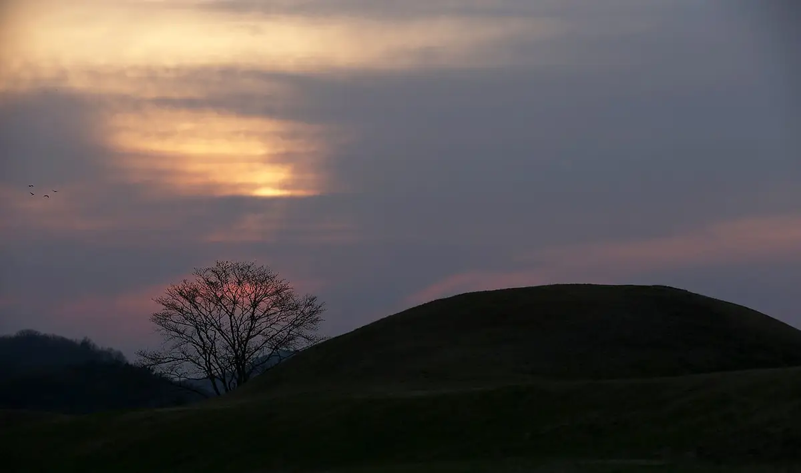
▲ 해 질 무렵의 말이산 고분 능선. 메타데이터상 촬영일은 2015-03-27이며, 잎이 진 나무 모습이 늦가을~겨울 분위기를 짐작하게 한다. 사진=Republic of Korea(Flickr) · Wikimedia Commons · CC BY-SA 2.0
말이산 탐방 전에 들를 함안박물관은 함안군 공식 안내로 09:00~18:00 운영(마감 30분 전까지 입장), 관람료 무료, 매주 월요일·1월 1일·설날·추석 당일 휴관이다. 박물관 안내 페이지의 최종 수정일은 2026년 8월 4일이다. 말이산고분전시관(가야읍 삼기길 91)은 한국관광공사 정보로 같은 09:00~18:00, 입장마감 17:30, 무료, 월요일 휴관이며 해설사 안내는 사전 예약이다(문의 055-580-3901, 한국관광공사 정보 최종 수정 2026-10-19). 월요일에 함안을 찾는다면 고분군은 걸을 수 있어도 박물관·전시관은 닫혀 있다는 점이 변수다.
6. 먹거리는 어디서? — 함안군 문화관광포털에 오른 주변 음식점
함안군 포털은 각 관광지 페이지에 주변 음식점을 함께 올려 두지만 메뉴·가격·영업시간은 적지 않았다. 아래는 등록 업소의 이름·주소·전화만 옮긴 것이며, 영업 여부는 전화로 확인해야 한다.
| 기준 장소 | 등록 업소(주소, 전화) |
|---|---|
| 입곡군립공원 주변 | 언양석쇠불고기(산인면 산인로 174, 055-582-0560), 문득그리움(산인면 산인로 164, 055-583-1666), 국보삼계탕(산인면 대천길 179-61, 055-585-7383), 한식카페 346.4S(산인면 산인로 346-4, 055-585-3464) |
| 무진정 주변 | 식목일(함안면 함안대로 255, 0507-1360-1336), 하만스빅버거(함안면 함안대로 253, 010-5557-7593), 무진(함안면 함안대로 257, 0507-1496-1281) |
| 악양둑방·악양루 주변 | 악양뚝방오리(법수면 대법로 225, 055-582-3198), 솔밭가든(법수면 법수로 492, 055-582-3240), 고향삼계탕(법수면 석무길 132, 055-582-2722), 신풍식육식당(법수면 석무길 130, 055-584-2033) |
입곡·무진정 쪽은 산인면과 함안면, 악양 쪽은 법수면에 식당이 몰려 있어 점심 위치는 오전에 어느 쪽을 걸었는지에 따라 정하면 된다.
7. 출발 전 확인 질문 5가지와 확인하지 못한 것
✅ 출발 전 체크
1) 입곡 트레킹 코스는 출발점과 도착점이 다르다 — 편도 3.15km 코스로 갈지, 중검마을 출발 코스로 갈지 정했는가 2) 11월에는 인공폭포가 멈추고 무빙보트도 우천·강풍 때 중단된다 — 055-580-3423 확인 3) 악양루 주차는 식당 주차장 20여 대뿐 — 갓길 주차 대신 풍차주차장 등 대안 확인 4) 악양둑방은 6.5km 기준으로 시간을 잡았는가 5) 올해 단풍·가을꽃 상태는 현지 공식 소식으로 재확인했는가.
| 항목 | 상태 |
|---|---|
| 입곡저수지 일주 공식 거리·시간 | 함안군 입곡 안내는 출렁다리를 건너는 산책로 일주만 소개하고 수치가 없음(재확인, 언론 수치는 출처 불명이라 제외) |
| 아라힐링 트레킹길 소요시간 | 함안군 안내에 없음 |
| 올해 함안 단풍 절정일 | 산림청 지도에 함안 별도 수치 없음 |
| 악양둑방 11월 초 개화 상태 | 함안군은 가을꽃으로 코스모스·국화 등을 안내하나 11월 초 상태는 공식 확인 불가 |
| 지점 간 도로 이동시간 | 공식 자료 없음(직선거리만 계산) |
| 대중교통 노선·배차 | 함안군 문화관광포털의 입곡·악양·무진정·말이산·박물관 페이지에 노선 안내가 없고 별도 공식 시간표도 찾지 못함 |
함안군 문화관광포털 일부 페이지는 최종 수정일이 2024~2025년이다. 코스 개편이나 통제가 있었을 수 있으니 문의 번호로 한 번 더 확인하자.
8. 정리
입곡 아라힐링 트레킹길은 코스별 3.15~4.9km(함안군 안내)이고 소요시간은 공식 안내가 없다. 입장료는 무료, 주차장은 2개소 158면이며 인공폭포는 11월부터 가동이 중단된다.
악양둑방은 2.7km(한국관광공사)와 왕복 6.5km(함안군)로 안내가 엇갈리고, 악양루는 식당 주차장 20여 대를 쓴다. 입곡·무진정·말이산은 직선 5km 안쪽이라 반나절에 묶기 쉽고, 악양은 말이산에서 7km 넘게 떨어져 따로 잡는 편이 낫다. 올해 단풍 절정일은 확인하지 못했다.